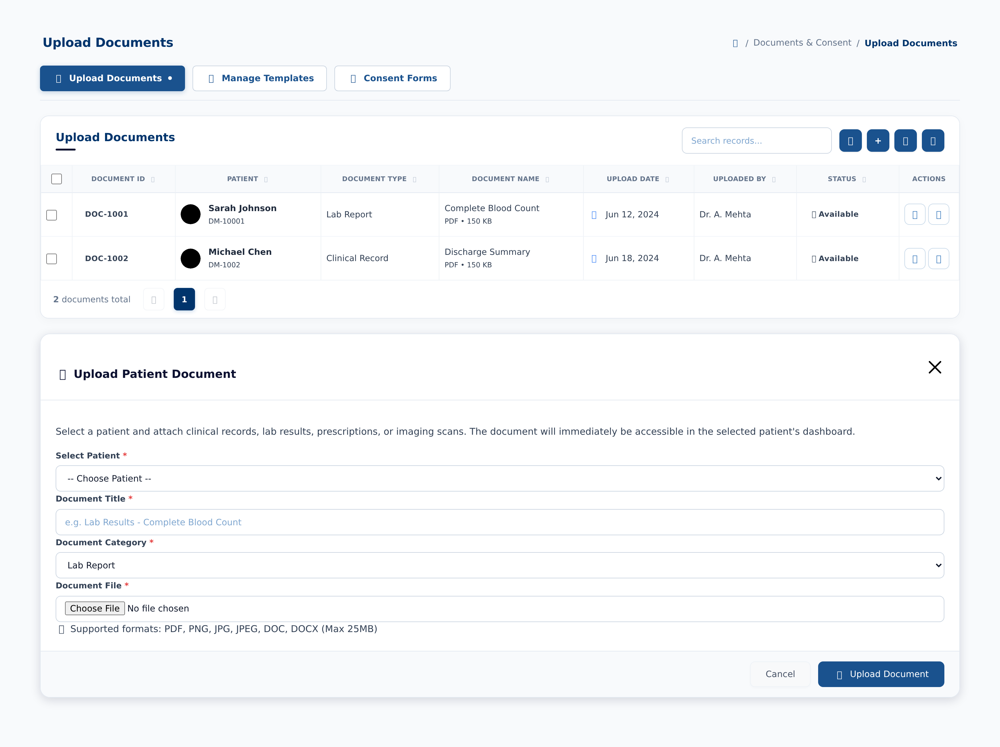
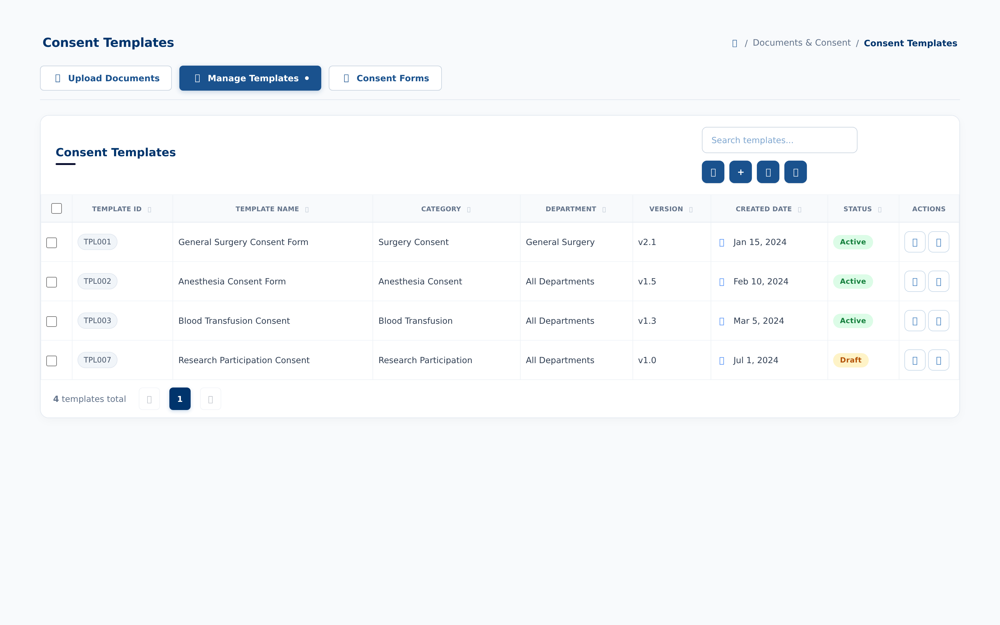
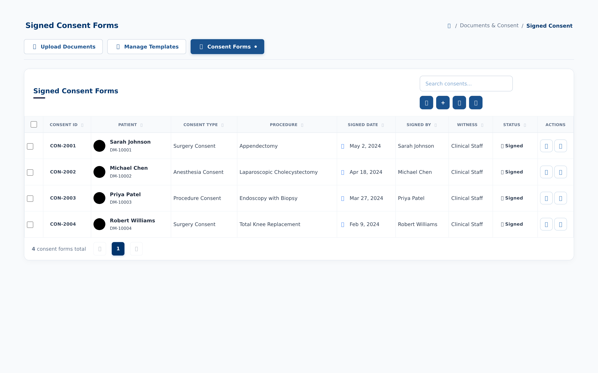
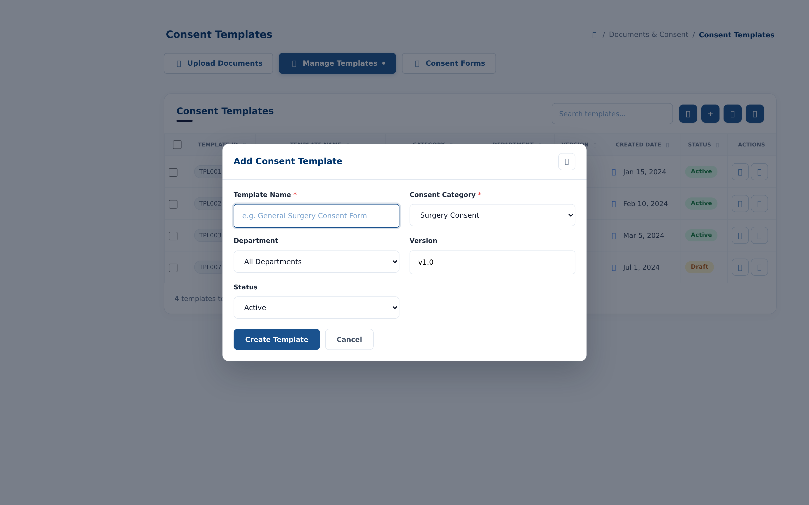
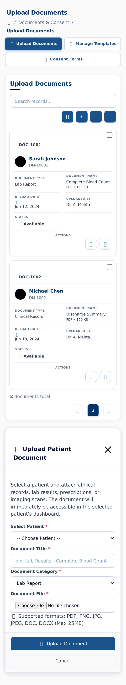
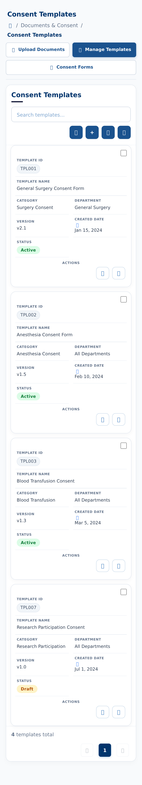
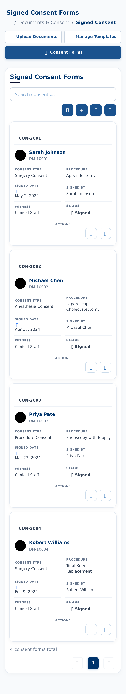
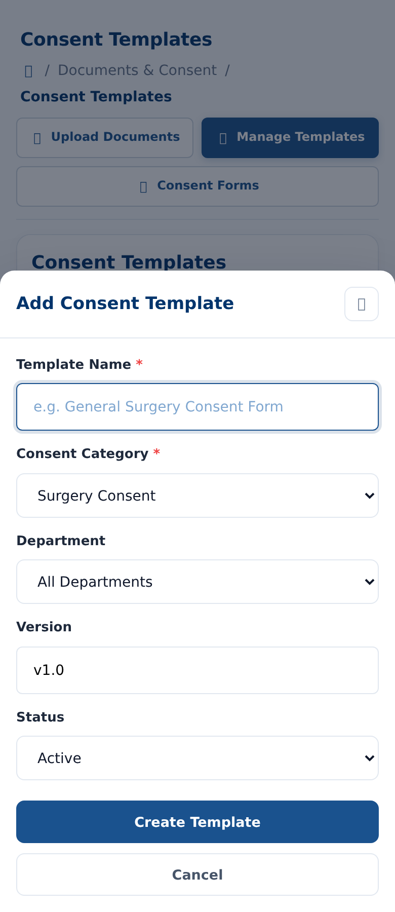

Task 5: teen sub-tabs ke dead buttons real banaye, Consent Templates ko hardcoded markup se nikaal kar DB-backed CRUD diya, aur teeno pages desktop / tablet / phone par fit kiye. Sab kuch existing dashboard tokens par — koi naya theme nahi.
| Control | Pehle | Ab |
|---|---|---|
| Add new record (Upload Documents toolbar) | dead Button ek undefined global
(diorOpenDoctorDocUploadModal()) call karta tha → console error, kuch nahi hota
tha. |
working Handler bound hai; function na mile to Bootstrap modal ka
getOrCreateInstance().show() fallback chalta hai. |
| Consent Templates (pura page) | fake 8 rows seedha HTML me hardcoded thi. Add/Edit/Delete par sirf DOM badalta tha — reload par sab wapas. Koi AJAX, koi table nahi. | working Naya table wp_dior_consent_templates, PHP se
render, aur overlay editor + save/delete/bulk-delete AJAX. |
| Export / Refresh (teeno tabs) | dead Koi handler nahi — click par kuch nahi. | working CSV download (Excel-friendly BOM) aur server refresh; icon spin + button disabled. |
| Toolbar trash (teeno tabs) | half Checkboxes ka koi sync nahi tha, kuch bhi select na ho to bhi delete chal jaata tha, aur delete sirf DOM row hatata tha. | working Select na ho to button disabled; selected IDs
dior_doc_*_bulk_delete par jaate hain, reload ke baad bhi row nahi aati. |
| Search | stale Filter sirf ek jagah likha tha; templates / signed par rows add hone ke baad naya row filter se bach nikalta tha. | working Shared diorFilterConsentRows() + counter
sync; add/delete ke baad count turant update. |
| Table layout (desktop) | clipped min-width: 1000px !important ki wajah se
table card se bahar nikal jaata tha — ACTIONS column kat jaata tha. |
fixed Media-query scoped sizing: headers wrap, 8px padding, actions column 96px. Table card ke andar exactly fit. |
| Pills | confusing Inactive aur active dono solid navy — current page pata hi nahi chalta tha. Labels bhi page title se repeat ho rahe the. | working Outline vs. filled + active dot, aur labels ab Upload Documents / Manage Templates / Consent Forms. |
Layout bug jo measure hua: 1440px par card 1052px tha, par table 1313–1419px
tak phail raha tha (signed consent me ~56px overflow). Mobile par min-width:1000px
media query ke bahar tha isliye wahan bhi leak ho raha tha.
wp_dior_consent_templates pehli load par dbDelta se banti hai aur 8 demo
rows ek baar seed hoti hain — page pehle jaisa bhara dikhta hai, blank empty-state nahi. Seed sirf
tab chalti hai jab table khaali ho, isliye live data kabhi overwrite nahi hota.| Item | Value |
|---|---|
| Table | wp_dior_consent_templates |
| Columns | id, template_uid, doctor_id, template_name, template_category, department, version,
status, created_at, updated_at |
| Keys | PRIMARY (id), UNIQUE (template_uid), index on
doctor_id / template_category / status |
| Scoping | Har query doctor_id par scoped — ek doctor doosre ka template nahi dekh sakta. |
| AJAX | dior_doc_consent_template_save, _delete,
_bulk_delete (array param ids[]), plus existing
dior_doc_document_update_meta / delete_document. Sab nonce-checked. |
Upload Documents

Manage Templates

Consent Forms

Add / Edit template — overlay

Upload Documents — cards

Manage Templates — cards

Consent Forms — cards

Add template — bottom sheet

data-label + ::before) — wahi treatment jo pharmacy aur prescriptions
par hai, koi side-scroll nahi.form-control ka 160px min-width).16px — focus par
Safari zoom nahi karta.92vh max height ke saath scroll karta hai,
buttons full-width, primary sabse upar.documentElement.scrollWidth === clientWidth —
zero horizontal overflow.| File | Role |
|---|---|
templates/doctor-tabs/documents.php |
Teeno panels PHP-driven; templates list wp_dior_consent_templates se render hoti
hai. Footer nesting fix, data-label attributes, pills rename. |
assets/js/dior-documents.js naya |
Shared overlay editor, template CRUD + bulk delete, upload/signed binders, CSV export,
refresh, search filter, counter sync. Nonce + credentials:'same-origin'. |
includes/class-dior-doctor-dynamic.php |
Consent-template schema, one-time seed, admin-ajax registrations aur render/owner/can-touch/save/delete methods. |
dior-medical-dashboard.php |
dior-documents.js enqueue (pharmacy JS ke saath, filemtime versioning). |
assets/css/dior-custom.css |
End me scoped TASK 5 blocks: pills/badges/empty states/overlay, 992px se neeche responsive cards + bottom sheet, 992px se upar table sizing, 420px se neeche toolbar stacking. |
Note: table pehli page load par dbDelta se ban jaati hai.
Seed rows tabhi insert hote hain jab table khaali ho — live site ka existing data safe rehta hai.